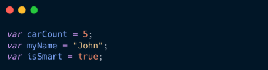

En programación, las variables son espacios o «compartimentos» donde se puede guardar información y asociarla a un determinado nombre al que haremos referencia durante el programa. De esta forma, cada vez que se consulte ese nombre posteriormente, te devolverá la información que contiene. La primera vez que se realiza este paso se suele llamar inicializar una variable.
Para declarar variables se utilizan las palabras clave var, let y para constantes se usa const. La diferencia principal está en el alcance y la mutabilidad. En ECMAScript 2015 se añade la palabra clave const, que permite crear «compartimentos» similares a una variable, salvo que los valores que contiene no pueden ser modificados. Esto tiene varios matices, así que vamos a explicarlo poco a poco.
Ejemplo:

Usar let y const es una buena práctica moderna en JavaScript. const se usa para valores que no deben cambiar, ayudando a evitar errores, mientras que let es ideal para variables cuyo valor sí cambia. En JavaScript, las variables son espacios de almacenamiento con nombre que pueden cambiar su valor durante la ejecución de un programa, mientras que las constantes son similares a las variables, pero su valor no puede ser modificado después de ser asignado. Las variables se declaran con let (o var en versiones antiguas) y las constantes con const.